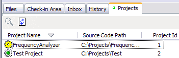

Project that you are a member of are listed in the Projects tab.
Code Co-op can only be in one project at a time (unless you run multiple copies of Code Co-op). When you want to visit another project, double-click on its icon in the Projects tab.

Projects tab also gives you an overview of what's happening in projects. A yellow icon means that there are files checked out, wavy lines mean that a synchronization script is waiting to be executed. The currently visited project has the icon with a green center.